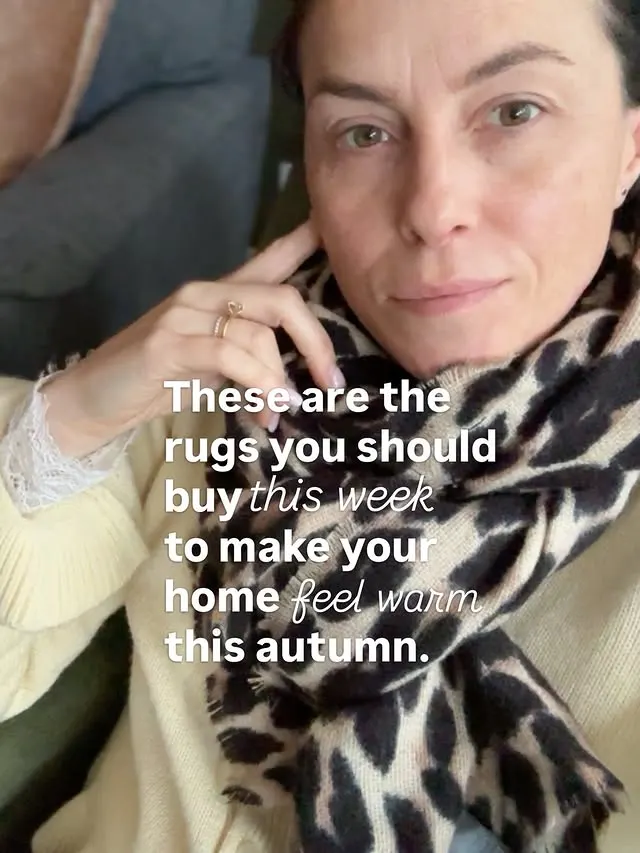
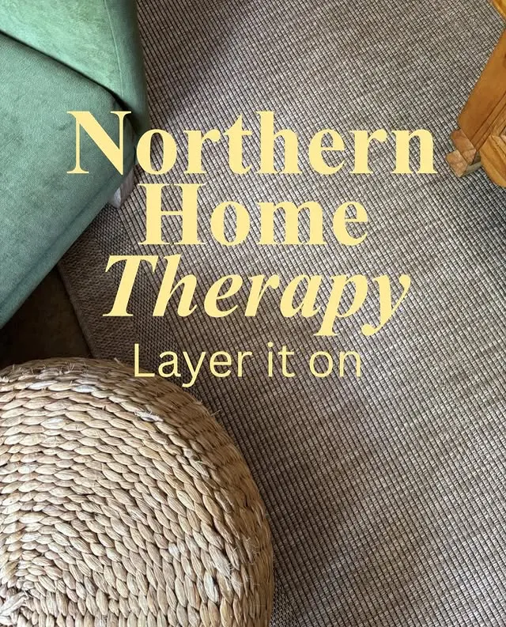
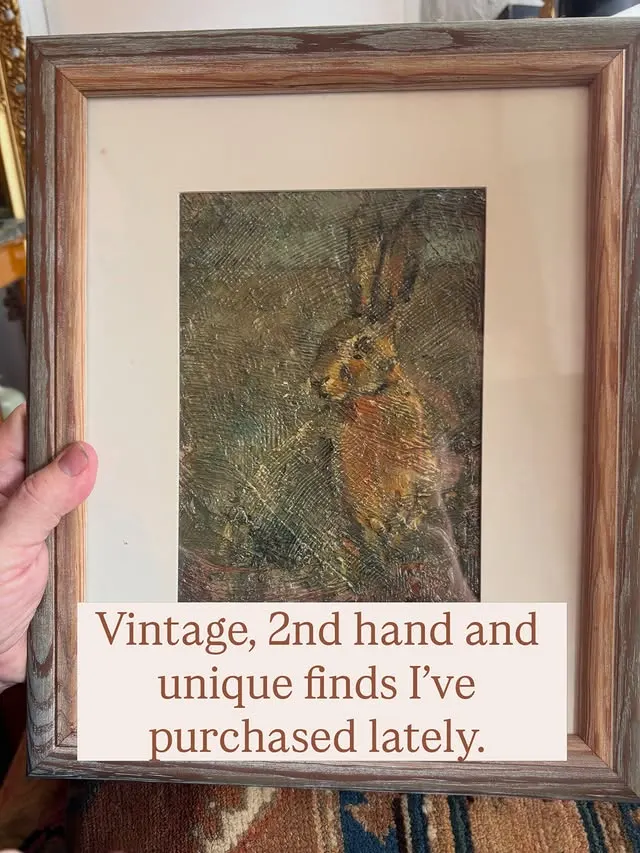
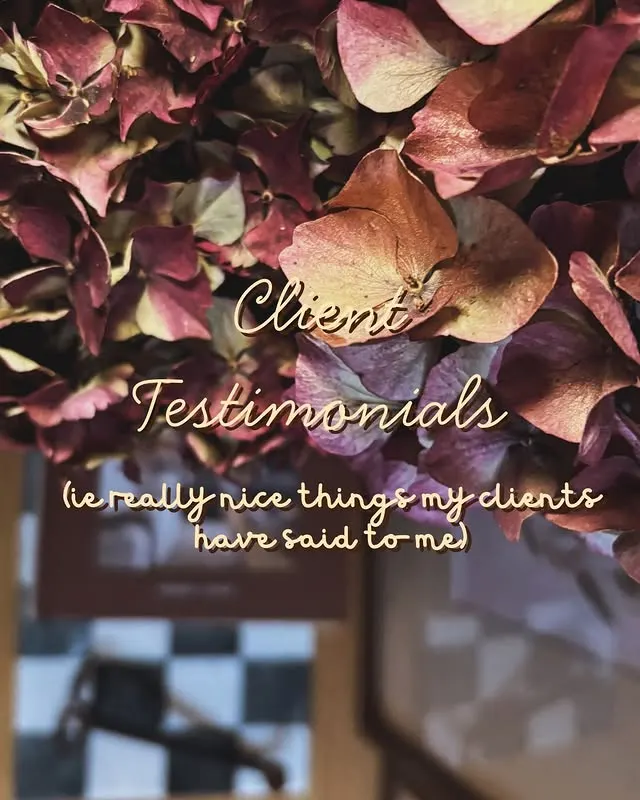

Rugs that warm up grey floors
Rugs with accents of grey in oatmeal, beige and cream can sort out the grey in a home — softening grey flooring and sofas while adding the warmth they need.
Interior design · Northern Ireland
Interior design advice for northern homes — because our grey skies do not need a friend (ie grey painted walls). Row C Interiors helps you layer warmth, texture and colour into rooms that feel like yours.

The philosophy
Northern homes live under soft, grey light for much of the year. Row C Interiors is built around that reality: oatmeal, beige and cream tones, natural textures and well-chosen vintage pieces that bring warmth in — rather than more grey.
From Roisin's feed
Honest, practical advice shared with her followers — the kind of thinking she brings to every home she works on.

Rugs with accents of grey in oatmeal, beige and cream can sort out the grey in a home — softening grey flooring and sofas while adding the warmth they need.

Unique pieces — like an Irish Hare painting or an antique French bobbin-leg stool — make a home feel original, not high street. Dried hydrangeas included.

“It's pure joy for me when my clients feel happy.” Roisin shares the really nice things her clients have said — and the homes behind them.
Work with Roisin
Row C Interiors offers interior design advice and consultancy for northern homes. Until now, the details have lived in an Instagram highlight or behind a DM — this page brings them together in one place.
Ask about working togetherPractical, honest guidance on colour, layout and finishes — made for northern light, not showroom light.
Focused sessions on the room that's bothering you — like layering a washable jute rug and autumn texture to change how a living room feels.
One-to-one consultancy with Roisin, an interior designer & consultant, for homes across Northern Ireland and beyond.
About
Roisin Mullan Murphy is the interior designer and consultant behind Row C Interiors, based in Northern Ireland. Her feed is a running notebook of northern-home design: which rugs warm up a grey floor, how to layer texture for autumn, and where a vintage find earns its place.
Her rule is simple — a home should feel original and warm, whatever the weather is doing outside.
Follow @row.c.interiorsSend Roisin a message on Instagram to ask about design advice, a Home Therapy session, or consultancy for your home.
Message @row.c.interiors